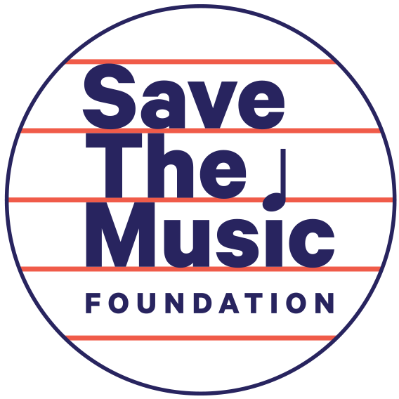
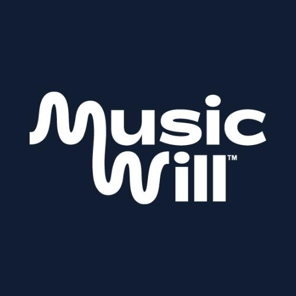
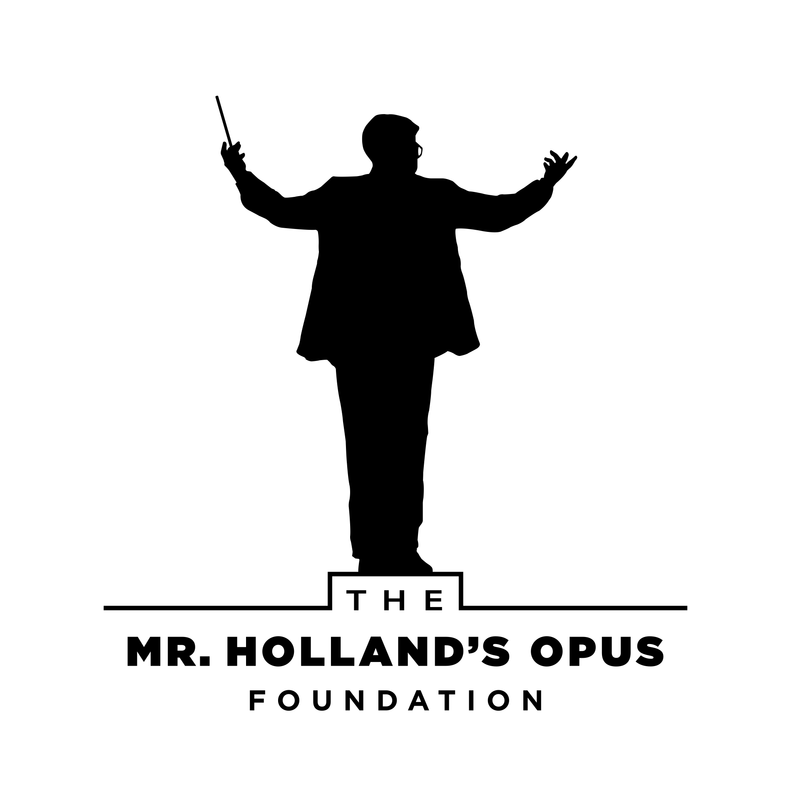
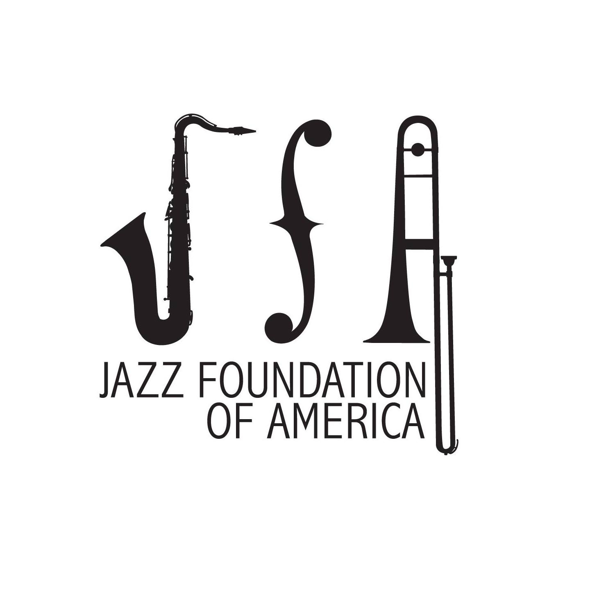
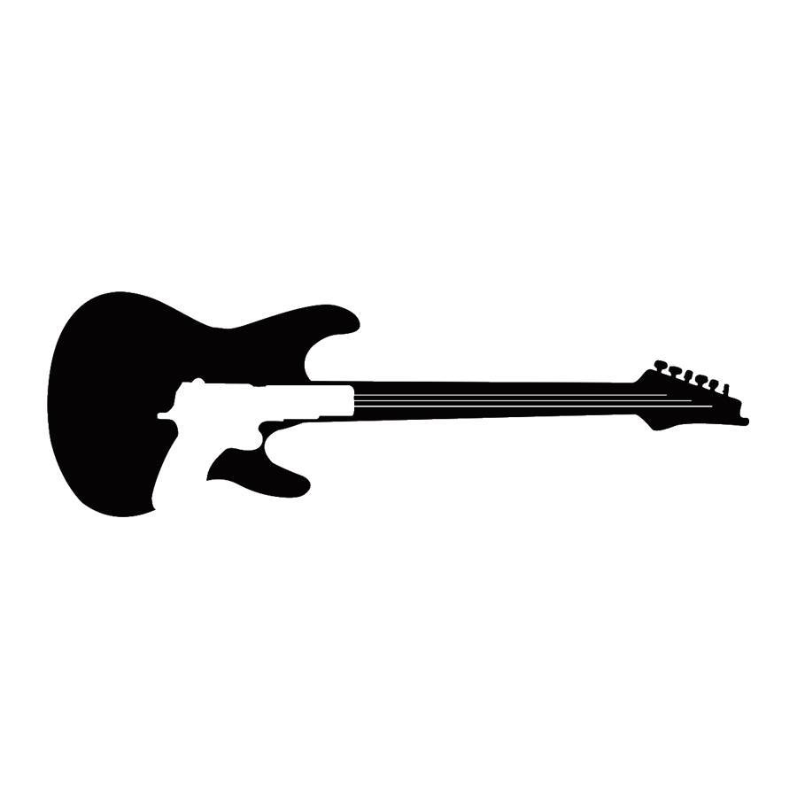

National Non-Profits:
- Save the Music Foundation
- Save the Music Foundation provides far-reaching support to schools, teachers, and students by providing funding for music education, teaching resources, and research into the impact of music education on student outcomes. They provide numerous grants to support music education from Grades PreK-12. Their education resources also include social emotional learning material as it relates to music.
- Music Will
- Music Will focuses their outreach on providing training to educators on their specific approach to teaching music. Called "modern band," the teaching approach aims to engage children in music by teaching with an emphasis on popular music of the student's choosing.
- Fender Play Foundation
- The Fender Play Foundation, which was created by Fender Musical Instruments Corporation (FMIC) in 2019, is mainly used to provide musical instruments and educational resources to children. Teaching resources include the Fender Play App which provides a curriculum for learning to play and read music for guitar, bass, and ukulele. There are also options for educational discounts on instruments and other musical equipment for educators.
- The Mr. Holland's Opus Foundation
- The Mr. Holland's Opus Foundation looks to provide instruments and resources to school age children, focusing on areas of underfunding. The majority of their work is through the donation of musical instruments to school districts, as well as providing other support services. Grant money is available to public school programs that serve economically disadvantaged students. They also provide a program called Music Rising for victims of natural disaster that do not qualify for aid through insurance of FEMA.
- Jazz Foundation of America
- The Jazz Foundation of America connects professional Blues and Jazz musicians with schools in low-income communities through their Jazz & Blues in the Schools program. The purpose of the program is multi-fold: providing work for artists, preserving jazz and blues, and teaching children about the music style. The program specifically aims to allow children with limited access to music education see and hear music performed live.
- Guitars Over Guns
- Guitars Over Guns (GOGO) was founded in Miami in 2008 and focuses on providing music education and mentorship for at-risk youth. Mentors are professional musician volunteers from the community who, in addition to providing music education, also provide guidance on social-emotional learning. Guitars Over Guns does outreach both in schools and within the community. They currently have branches in Miami, Chicago, and Los Angeles.
Find Local Charities: